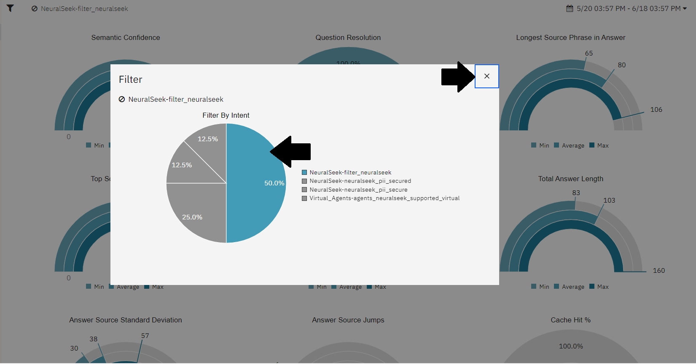
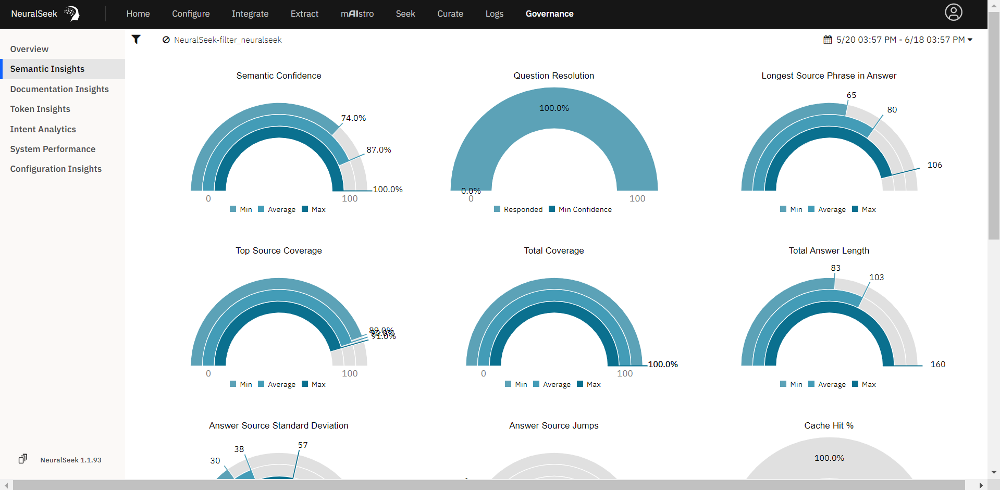

2.4 - Configuración de la base de conocimientos
NeuralSeek ofrece varias formas de mejorar las respuestas generadas a partir de su Base de Conocimientos conectada. Dentro de la pestaña Configure de NeuralSeek, puede ajustar diferentes parámetros adaptados a su caso de uso para mejorar las respuestas de baja calidad. Para obtener más información sobre las mejores prácticas de ajuste de la base de conocimientos, consulte nuestro KnowledgeBase Tuning Guide en nuestra documentación.
Reducción de documentos máximos, aumento del tamaño del fragmento
La opción Máximo de documentos por búsqueda establece la cantidad de documentos que se enviarán al LLM en cada acción de búsqueda. La opción Tamaño del fragmento establece la cantidad de caracteres que se pasarán a la base de conocimientos para el tamaño del pasaje del documento. Cuanto mayor sea el número, mayor será el fragmento de documentación.
Vamos a jugar con estos ajustes y revisar cómo se ven afectadas nuestras respuestas generadas.
- Navegue a la pestaña
Configureen NeuralSeek. - Expanda el acordeón Ajuste de la base de conocimientos.
- Use la escala deslizante para establecer el
Max Documents per Seeken 1. - Use la escala deslizante para establecer el
Snippet Sizeen 1000. - Haga clic en el botón rojo Guardar para guardar los cambios de configuración.
{kind=link}
- Navegue a la pestaña
Seekdentro de NeuralSeek. - Consulta
"How does NeuralSeek filter?" - Ver la salida a continuación.
{kind=link}
{kind=link}
Aumento de documentos máximos, reducción del tamaño del fragmento
Ahora, echemos un vistazo a cómo se ven afectadas nuestras respuestas generadas cuando el Máximo de documentos por búsqueda se establece en un número alto y el Tamaño del fragmento se establece en un número bajo.
- Navegue a la pestaña
Configureen NeuralSeek. - Expanda el acordeón Ajuste de la base de conocimientos.
- Use la escala deslizante para establecer el
Max Documents per Seeken 30. - Use la escala deslizante para establecer el
Snippet Sizeen 250. - Haga clic en el botón rojo Guardar para guardar los cambios de configuración.
{kind=link}
- Navegue a la pestaña
Seekdentro de NeuralSeek. - Consulta
"How does NeuralSeek filter?" - Ver la salida a continuación.
{kind=link}
{kind=link}
- Navegue a la sección Ajuste de la base de conocimientos de la pestaña
Configurepara restablecer los valores a los ajustes óptimos de:- Máximo de documentos por búsqueda: 4
- Tamaño del fragmento: 500
- Haga clic en Guardar.
Reducción del rango de puntuación de documentos
Rango de puntuación de documentos dicta el rango de posibles puntajes de relevancia que NeuralSeek devolverá como resultado. Por ejemplo, si el rango de puntuación es 0.8, los resultados serán de documentos con un puntaje de relevancia entre el rango del 20% al 100%. Cuando se reduce el Rango de puntuación de documentos, hay una mayor exigencia en enviar el resultado mejor emparejado.
Veamos cómo la reducción del Rango de puntuación de documentos afecta nuestros resultados de búsqueda.
- Navegue a la pestaña
Configureen NeuralSeek. - Expanda el acordeón Ajuste de la base de conocimientos.
- Use la escala deslizante para establecer el
Document Score Rangeen 0.2, o 20%. - Haga clic en el botón rojo Guardar para guardar los cambios de configuración.
{kind=link}
- Navegue a la pestaña
Seekdentro de NeuralSeek. - Consulta
"How is PII secured by NeuralSeek?" - Ver la salida a continuación. El 20% superior de nuestros documentos con la puntuación más alta para esta consulta se enviaron de vuelta para la generación de respuestas.
{kind=link}
{kind=link}
- Navegue a la sección Ajuste de la base de conocimientos de la pestaña
Configurepara restablecer el valor del Rango de puntuación de documentos a la configuración óptima de 0.8, o 80%. - Haga clic en Guardar.
Priorizar la documentación
La herramienta Re-Ordenar lista de valores permite a los usuarios priorizar los valores, sin excluir por completo otros valores.
Veamos un ejemplo en el que nos gustaría priorizar el contenido de nuestras fuentes en nuestra base de conocimientos para generar respuestas.
- Navegue a la pestaña
Configureen NeuralSeek. - Expanda el acordeón Conexión de la base de conocimientos.
- En el campo Re-Ordenar, agregue la propiedad de metadatos de
title. - Haga clic en el icono de la bombilla para agregar una nueva fila de prioridad.
- Para la Prioridad 1, agregue
/^KnowledgeBase Tuning/como valor. Esto priorizará los valores que comiencen con Ajuste de la base de conocimientos, con el objetivo de generar respuestas de la guía de documentación de Ajuste de la base de conocimientos de NeuralSeek. - Haga clic en el botón rojo Guardar para guardar los cambios de configuración.
{kind=link}
- Navegue a la pestaña
Seekdentro de NeuralSeek. - Consulta
"How can source documentation be improved?" - Ver la salida a continuación. La priorización del documento titulado Guía de documentación de ajuste de la base de conocimientos de NeuralSeek se está produciendo detrás de escena. Los detalles de Contexto de la base de conocimientos se basan en la clasificación visual, por lo que si una fuente diferente aparece en la parte superior de esa sección, la priorización del contenido del documento de Ajuste de la base de conocimientos aún se produce para la generación de respuestas.
{kind=link}
{kind=link}
Gobernanza de la analítica de intenciones
La pestaña de Gobernanza de NeuralSeek sirve como una plataforma centralizada donde los usuarios pueden acceder a diversos conocimientos e indicadores relacionados con la gobernanza de su sistema NeuralSeek.
Conocimientos de configuración
- Navegue a la pestaña Gobernanza dentro de NeuralSeek
- Haga clic en
Configuration Insights. Aquí podemos revisar cada versión de nuestra configuración de NeuralSeek que contiene los diferentes cambios realizados durante los pasos de ajuste de NeuralSeek. - Haga clic en una versión para mostrar las modificaciones realizadas en la pestaña Configurar.
- Haga clic en la lupa con el icono de más para acercar la fecha de hoy.
{kind=link}
Conocimientos de documentación
- Haga clic en
Documentation Insights. Aquí podemos revisar las fuentes y referencias utilizadas con frecuencia por NeuralSeek para la generación de respuestas.
{kind=link}
- Haga clic en el icono del filtro en la esquina superior izquierda.
- Haga clic en una intención para filtrar y luego haga clic en la 'x' en la esquina derecha para cerrar la pantalla de filtro.
- Observe cómo los gráficos cambian para proporcionar detalles sobre la documentación relacionada con esa intención filtrada.
{kind=link}
{kind=link}
Conocimientos semánticos
- Finalmente, haga clic en
Semantic Insights. Aquí podemos ver gráficos con conocimientos sobre nuestra Confianza semántica, Cobertura de la fuente principal, Saltos de fuente y más. Esto brinda a los usuarios una mejor comprensión del contexto generado y permite a los usuarios monitorear la calidad.
{kind=link}
- Haga clic en el icono del filtro en la esquina superior izquierda.
- Haga clic en una intención para filtrar y luego haga clic en la 'x' en la esquina derecha para cerrar la pantalla de filtro.
- Observe cómo los gráficos cambian para proporcionar un análisis más específico de los conocimientos semánticos de la intención filtrada.


NeuralSeek ofrece diversas opciones para mejorar las respuestas generadas a partir de su Base de Conocimientos conectada. En la pestaña Configure de NeuralSeek, puedes ajustar diferentes parámetros según tus necesidades para mejorar las respuestas de baja calidad. Para más detalles sobre las mejores prácticas para ajustar la base de conocimientos, consulta nuestra KnowledgeBase Tuning Guide en la documentación.
{kind=link}
{kind=link}
Reducción de documentos máximos, aumento del tamaño del fragmento
La opción Máximo de documentos por búsqueda determina la cantidad de documentos que se enviarán al LLM en cada búsqueda. La opción Tamaño del fragmento define la cantidad de caracteres que se pasarán a la base de conocimientos para el tamaño del pasaje del documento. Cuanto mayor sea el número, mayor será el fragmento de documentación.
Probemos estos ajustes y veamos cómo afectan nuestras respuestas generadas.
- Navega a la pestaña
Configureen NeuralSeek. - Expande el acordeón Ajuste de la base de conocimientos.
- Usa la escala deslizante para establecer el
Max Documents per Seeken 1. - Usa la escala deslizante para establecer el
Snippet Sizeen 1000. - Haz clic en el botón rojo Guardar para guardar los cambios de configuración.
- Navega a la pestaña
Seekdentro de NeuralSeek. - Realiza la consulta
"How does NeuralSeek filter?" - Revisa la salida a continuación.
Aumento de documentos máximos, reducción del tamaño del fragmento
Ahora, veamos cómo cambian nuestras respuestas generadas cuando el Máximo de documentos por búsqueda se establece en un número alto y el Tamaño del fragmento en un número bajo.
- Navega a la pestaña
Configureen NeuralSeek. - Expande el acordeón Ajuste de la base de conocimientos.
- Usa la escala deslizante para establecer el
Max Documents per Seeken 30. - Usa la escala deslizante para establecer el
Snippet Sizeen 250. - Haz clic en el botón rojo Guardar para guardar los cambios de configuración.
- Navega a la pestaña
Seekdentro de NeuralSeek. - Realiza la consulta
"How does NeuralSeek filter?" - Revisa la salida a continuación.
- Navega a la sección Ajuste de la base de conocimientos de la pestaña
Configurepara restablecer los valores a los ajustes óptimos de:- Máximo de documentos por búsqueda: 4
- Tamaño del fragmento: 500
- Haz clic en Guardar.
Reducción del rango de puntuación de documentos
Rango de puntuación de documentos dicta el rango de posibles puntajes de relevancia que NeuralSeek devolverá como resultado. Por ejemplo, si el rango de puntuación es 0.8, los resultados serán de documentos con un puntaje de relevancia entre el rango del 20% al 100%. Cuando se reduce el Rango de puntuación de documentos, hay una mayor exigencia en enviar el resultado mejor emparejado.
Veamos cómo la reducción del Rango de puntuación de documentos afecta nuestros resultados de búsqueda.
- Navega a la pestaña
Configureen NeuralSeek. - Expande el acordeón Ajuste de la base de conocimientos.
- Usa la escala deslizante para establecer el
Document Score Rangeen 0.2, o 20%. - Haz clic en el botón rojo Guardar para guardar los cambios de configuración.
- Navega a la pestaña
Seekdentro de NeuralSeek. - Realiza la consulta
"How is PII secured by NeuralSeek?" - Revisa la salida a continuación. El 20% superior de nuestros documentos con la puntuación más alta para esta consulta se enviaron de vuelta para la generación de respuestas.
- Navega a la sección Ajuste de la base de conocimientos de la pestaña
Configurepara restablecer el valor del Rango de puntuación de documentos a la configuración óptima de 0.8, o 80%. - Haz clic en Guardar.
Priorizar la documentación
La herramienta Re-Ordenar lista de valores permite a los usuarios priorizar los valores, sin excluir por completo otros valores.
Veamos un ejemplo en el que nos gustaría priorizar el contenido de nuestras fuentes en nuestra base de conocimientos para generar respuestas.
- Navega a la pestaña
Configureen NeuralSeek. - Expande el acordeón Conexión de la base de conocimientos.
- En el campo Re-Ordenar, agrega la propiedad de metadatos de
title. - Haz clic en el icono de la bombilla para agregar una nueva fila de prioridad.
- Para la Prioridad 1, agrega
/^KnowledgeBase Tuning/como valor. Esto priorizará los valores que comiencen con Ajuste de la base de conocimientos, con el objetivo de generar respuestas de la guía de documentación de Ajuste de la base de conocimientos de NeuralSeek. - Haz clic en el botón rojo Guardar para guardar los cambios de configuración.
- Navega a la pestaña
Seekdentro de NeuralSeek. - Realiza la consulta
"How can source documentation be improved?" - Revisa la salida a continuación. La priorización del documento titulado Guía de documentación de ajuste de la base de conocimientos de NeuralSeek se está produciendo detrás de escena. Los detalles de Contexto de la base de conocimientos se basan en la clasificación visual, por lo que si una fuente diferente aparece en la parte superior de esa sección, la priorización del contenido del documento de Ajuste de la base de conocimientos aún se produce para la generación de respuestas.
Gobernanza de la analítica de intenciones
La pestaña de Gobernanza de NeuralSeek sirve como una plataforma centralizada donde los usuarios pueden acceder a diversos conocimientos e indicadores relacionados con la gobernanza de su sistema NeuralSeek.
Conocimientos de configuración
- Navega a la pestaña Gobernanza dentro de NeuralSeek
- Haz clic en
Configuration Insights. Aquí podemos revisar cada versión de nuestra configuración de NeuralSeek que contiene los diferentes cambios realizados durante los pasos de ajuste de NeuralSeek. - Haz clic en una versión para mostrar las modificaciones realizadas en la pestaña Configurar.
- Haz clic en la lupa con el icono de más para acercar la fecha de hoy.
Conocimientos de documentación
- Haz clic en
Documentation Insights. Aquí podemos revisar las fuentes y referencias utilizadas con frecuencia por NeuralSeek para la generación de respuestas.
- Haz clic en el icono del filtro en la esquina superior izquierda.
- Haz clic en una intención para filtrar y luego haz clic en la 'x' en la esquina derecha para cerrar la pantalla de filtro.
- Observa cómo los gráficos cambian para proporcionar detalles sobre la documentación relacionada con esa intención filtrada.
Conocimientos semánticos
- Finalmente, haz clic en
Semantic Insights. Aquí podemos ver gráficos con conocimientos sobre nuestra Confianza semántica, Cobertura de la fuente principal, Saltos de fuente y más. Esto brinda a los usuarios una mejor comprensión del contexto generado y permite a los usuarios monitorear la calidad.
- Haz clic en el icono del filtro en la esquina superior izquierda.
- Haz clic en una intención para filtrar y luego haz clic en la 'x' en la esquina derecha para cerrar la pantalla de filtro.
- Observa cómo los gráficos cambian para proporcionar un análisis más específico de los conocimientos semánticos de la intención filtrada.
Manejo de Información Personal Identificable (PII)
NeuralSeek cuenta con un avanzado rutina de detección de Información Personal Identificable (PII) que identifica automáticamente cualquier PII dentro de las entradas de los usuarios. Permite a los usuarios mantener un entorno seguro y ofrecer respuestas precisas a las consultas de los usuarios.
Navegue a la pantalla Configurar en NeuralSeek y haga clic en el cuadro Guardrails.
{kind=link}
Establecer Filtros de PII basados en LLM
Amplíe los detalles de Manejo de Información Personal Identificable (PII).
- Navegue hasta LLM - Filtros de PII basados en y haga clic en el ícono de la bombilla para agregar una nueva fila.
- Agregue una oración de ejemplo. Por ejemplo:
I went to college at Harvard. - En el cuadro de la derecha, agregue el elemento de PII de la oración de ejemplo. En este ejemplo:
Harvard. - Haga clic en el icono rojo de Guardar en la parte inferior de la pantalla.
{kind=link}
- Haga clic en el botón "Pruébelo" para probar la función de enmascaramiento de PII.
- Escriba una pregunta de ejemplo, como:
Is Harvard a good college?. - Observe cómo "Harvard" está enmascarado en la oración, la PII está marcada como verdadera y enumera el elemento de PII correcto.
{kind=link}
Buscar una Consulta
Navegue a la pantalla de búsqueda de NeuralSeek.
- Busque la pregunta relacionada con el elemento PII para ver la funcionalidad de enmascaramiento. En este ejemplo, busque:
What is the address for Harvard?
Observe que la respuesta no se enmascara en el resultado. Sin embargo, enmascara tanto la pregunta como la respuesta en la intención creada.
{kind=link}
Inspeccionar PII
Vaya a la pantalla de Curación en NeuralSeek. Aquí, podemos ver esa intención recién creada con un símbolo que indica que contiene PII.
- Amplíe la intención para ver las respuestas. Note cómo la ubicación de Virginia que preguntamos en la pregunta está oculta para proteger el PII.
{kind=link}